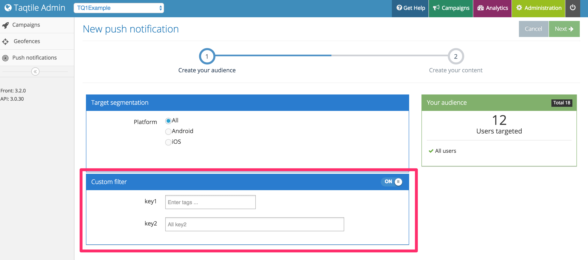

Custom Data
You can send user specific information using Custom Data main access method, these information will be used to filter users when sending push notifications:
- (void)addCustomData:(NSDictionary *)customData completion:(void (^)(BOOL success))completion;
The argument customData must be a dictionary with NSString values.
Another method is available to send custom data:
- (void)addCustomData:(NSDictionary *)customData keysToIgnore:(NSArray *)keysToIgnore completion:(void (^)(BOOL success))completion;
The argument keysToIgnore is an array of keys from customData that optionally can be passed. These keys will be ignored while filtering audience in TQ1 admin portal.
Once you send it you can check the push notification sending page, as they will appear under the Custom Filter section:
